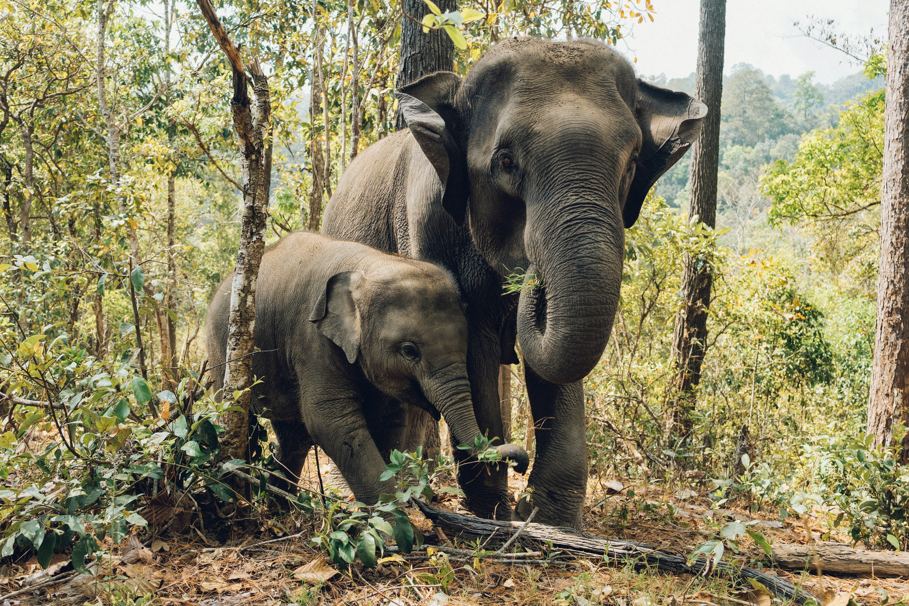

lion is a wild animal which lives in jungle. He is one of the strongest animals. He is called as “King of the Jungle” due to his huge size, power and attacking nature. Today lions are found in sub-Saharan part of Africa and in Asia. They are represented as a symbol of pride, courage, glory and fearlessness. In ancient times, people, especially kings, used to hunt
lions and keep their skin to show their courage and vigour to their enemies.
 Elephants are the biggest terrestrial animals. They are found mostly in dense forests and are always found in groups. The elephants are black in colour with a small tail, two big ears, thick legs, a trunk, and two little eyes. The teeth of the elephants are very costly and are referred to as tusks
 Rhinoceroses are large, heavy animals with thick gray or brown skin, short legs and one or two horns on their nose. They are herbivores and only eat plants. Rhinoceroses are endangered, meaning there are very few left, because they have been hunted for the horns on their nose.
Rhinoceroses are large, heavy animals with thick gray or brown skin, short legs and one or two horns on their nose. They are herbivores and only eat plants. Rhinoceroses are endangered, meaning there are very few left, because they have been hunted for the horns on their nose.